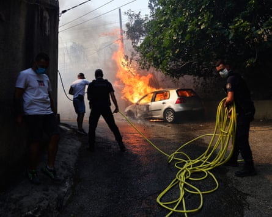
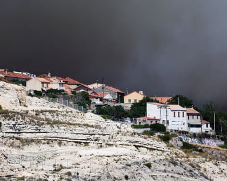
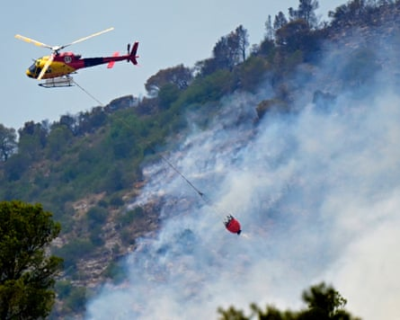
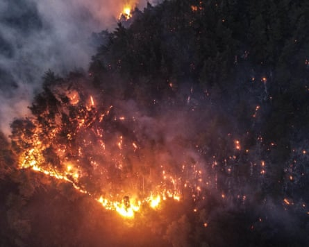

A fast-moving wildfire fanned by gale-force winds has forced Marseille airport to cancel all flights and was encroaching on France’s second-largest city, officials said, as firefighters around the Mediterranean battled blazes sparked by an intense heatwave.
The prefecture of the Provence-Alpes-Côtes d’Azur region issued an alert on Tuesday urging inhabitants of Marseille’s 16th arrondissement to stay indoors, close doors and shutters and hang wet laundry around openings to avoid the risk of smoke inhalation.
Roads should be kept clear for emergency services, the prefecture said. Marseille city hall said the fire was spreading, adding: “Avoid all outdoor activities and do not block emergency access routes. Follow instructions and alert messages.”
Marseille airport said it had suspended all flights at about midday, shortly after the blaze erupted outside the nearby town of Les Pennes-Mirabeau. Local media reported the cause appeared to have been a vehicle that caught fire on the A552 motorway.
Departures to Brussels, Munich and Naples were cancelled, with incoming flights diverted to nearby airports, including Nice and Nimes. Marseille is France’s second largest regional airport, handling nearly 11 million passengers last year.
Marseille city hall said 720 firefighters were battling the blaze with 220 emergency vehicles, helped by helicopters and water-bombing planes. About 350 hectares of land had been consumed by late afternoon.
Police try to extinguish a blazing car in the L’Estaque district of Marseille on Tuesday.Photograph: Clement Mahoudeau/AFP/Getty Images
There were no immediate reports of casualties but the mayor of Les Pennes-Mirabeau said two housing estates had been evacuated and firefighters were preparing to fight off approaching flames near a retirement home.
A spokesperson at the mayor’s office for Marseille’s 15th and 16th arrondissements, closest to the fire, said the outer limits of the city were clearly threatened and covered in thick smoke. Authorities were awaiting possible instructions to evacuate.
“It’s very striking – apocalyptic even,” Monique Baillard, a resident of Les Pennes-Mirabeau, told Reuters, adding that many of her neighbours had left.
Another resident, Jacqueline Revilla, said: “The smoke is very striking, very acrid.”
Fanned by a 70km/h wind, the fire could be smelled in the centre of Marseille and video showed large plumes of smoke billowing over the city outskirts. Three southern French departments, Bouches-du-Rhône, Var and Vaucluse, are on red fire alert.
Many of the region’s forests have been closed and barbecues and cigarettes banned near wooded areas. About 4,000 fires start each year in France, about 90% caused by human activity. Negligently causing a wildfire carries a jail term of up to 10 years.
The wildfire approaches the L’Estaque district of Marseille.Photograph: Clement Mahoudeau/AFP/Getty Images
About 250km west of Marseille, a wildfire that started near the city of Narbonne was still active on Tuesday after burning through about 2,000 hectares of forest, forcing the partial closure of the A9 motorway and dozens of evacuations.
Fuelled by 60km/h winds, the blaze was “still not under control. It is a fire that has spread very quickly,” the prefect of Aude department, Christian Pouget, said. More than 1,000 firefighters had been deployed, five of whom had been slightly injured.
“We know we’re going to have a difficult afternoon, with firefighters exhausted” after working through the night, Christophe Magny, the Aude department fire chief, said on Tuesday afternoon, adding that there was still a “high risk of spread”.
A helicopter attempt to combat a forest fire near Tarragona, Spain.Photograph: José Jordan/AFP/Getty Images
In Spain , firefighters in the north-east of the country continued to battle a wildfire in the Catalan province of Tarragona that has burned through more than 3,100 hectares of forest, farm and urban land, and confined 18,000 people indoors.
Winds of up to 90km/h were complicating the efforts of about 100 troops from Spain’s military emergencies unit and 300 regional firefighters to combat the fire, which broke out in the municipality on Sunday.
“Although we expected strong winds, we were surprised by just how strong they were,” said David Borrell, the regional fire department chief. “We’ve been working all night in a very precarious, very difficult way
Experts have warned of a high risk of forest fires this year after heavy spring rains prompted a vegetation growth spurt. High temperatures have now made vegetation dry and brittle: last month the Andalucían province of Huelva registered a record 46C .
Syria on Tuesday appealed for help from the EU in battling wildfires that have been blazing for six days, sweeping through a vast expanse of forest. Neighbouring Jordan, Lebanon and Turkey have already dispatched firefighting teams to assist.
Forest fires ravaging Syria’s Latakia province on Monday.Photograph: Anadolu/Getty Images
The UN’s office for the coordination of humanitarian affairs in Syria said the fires had affected about 5,000 people and 60 communities, destroying 100 sq km of forest and farmland – more than 3% of Syria’s forest cover.
Rugged terrain, the absence of firebreaks, strong winds and the presence of mines and unexploded ordnance were making it difficult to combat the fire effectively, the minister for emergencies and disaster management, Raed al-Saleh, said.
In Greece, authorities in Athens shut the Acropolis, the city’s most visited ancient site, from 1-5pm local time as temperatures soared to 38C. The ruins are on a rocky hillside that offers little shade.